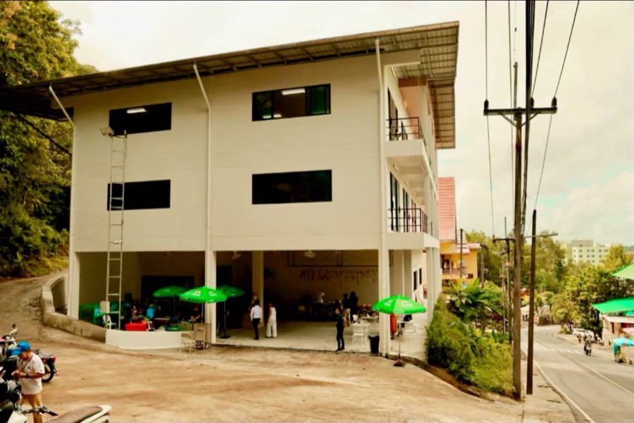

เส้นทางจากศรัทธาหนึ่งดวง สู่อาคาร 100 เตียงข้างวัดเขารังสามัคคีธรรม
ผู้ป่วยและครอบครัวจากต่างอำเภอ ต่างจังหวัด ที่ต้องเดินทางเข้ามารักษาตัวในภูเก็ต ไม่ได้แบกแค่ค่ารักษาพยาบาล แต่ยังต้องแบกค่าเดินทางและค่าที่พักไปพร้อมกัน บางครอบครัวต้องเลือกระหว่างการอยู่ใกล้คนที่รักระหว่างการรักษา กับการประหยัดเงินที่มีอยู่อย่างจำกัด
บ้านพึ่งวัดเกิดขึ้นเพื่อไม่ให้ใครต้องเลือก — เพื่อให้ทุกครอบครัวมีที่พักพิงที่ปลอดภัยและอบอุ่นอยู่ใกล้โรงพยาบาล โดยไม่ต้องกังวลเรื่องค่าใช้จ่ายระหว่างช่วงเวลาที่ยากที่สุดช่วงหนึ่งของชีวิต

จุดเริ่มต้นของบ้านพึ่งวัด มาจากปณิธานของคุณอรสา โตสว่าง ที่อยากเห็นผู้ป่วยที่ขาดแคลนทุนทรัพย์มีที่พักพิงระหว่างการรักษาตัว
.todo รอเรื่องเต็มจากคุณอรสาปณิธานหนึ่งดวงขยายสู่แรงร่วมมือของชุมชนภูเก็ต ผ่านการทอดผ้าป่าสามัคคี ณ วัดเขารังสามัคคีธรรม
.todo รอยอด/จำนวนผู้ร่วมงานจริงจากแรงศรัทธาที่รวมกัน อาคาร 3 ชั้นข้างวัดเขารังสามัคคีธรรมค่อยๆ ก่อร่างขึ้นทีละขั้น จนแล้วเสร็จเป็นบ้าน 100 เตียง
.todo รอช่วงเวลาก่อสร้างจริง
อาคาร 100 เตียงพร้อมเปิดรับผู้ป่วยและครอบครัวชุดแรก เริ่มต้นภารกิจของบ้านพึ่งวัดอย่างเป็นทางการ
เฟสถัดไปของบ้านพึ่งวัด คือโรงครัวสำหรับผู้เข้าพัก เพื่อให้การดูแลผู้ป่วยและครอบครัวครบวงจรยิ่งขึ้น